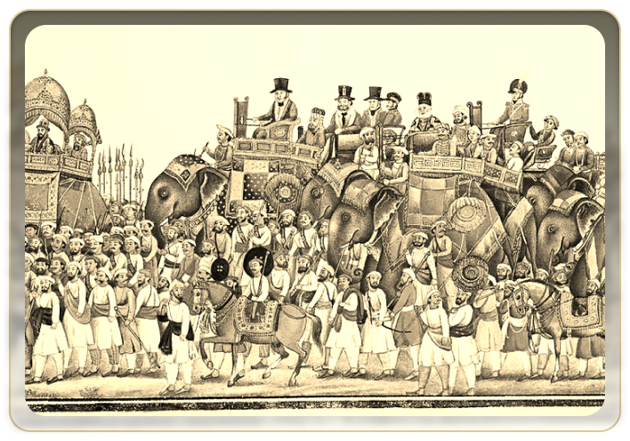

{{'Part4.LEG' | translate}}
{{'Part4.UPPER' | translate}}
{{'Part4.THE' | translate}}
{{'Part4.IMG1' | translate}}
{{'Part4.IMG2' | translate}}
{{'Part4.IMG3' | translate}}
{{'Part4.IMG4' | translate}}
{{'Part4.IMG5' | translate}}
{{'Part4.IMG6' | translate}}
{{'Part4.IMG7' | translate}}
{{'Part4.IMG8' | translate}}
{{'Part4.IMG9' | translate}}
{{'Part4.IMG10' | translate}}
{{'Part4.IMG11' | translate}}
{{'Part4.IMG12' | translate}}




Historians say the savagery with which the Company retaliated had never been seen before, especially in
India. The blood shed, lives lost and the atrocities the year of the rebellion saw were manganimously
high. The news reached Britain, albeit with altered narratives, and shocked many a people.
It was after this rebellion that the British Crown assumed direct control over the British held Indian territories, on the 1st of November 1858. With this move, The East India Company ceased to be a sovereign power over India, ending the era of India being ruled by a trading organisation.
It was after this rebellion that the British Crown assumed direct control over the British held Indian territories, on the 1st of November 1858. With this move, The East India Company ceased to be a sovereign power over India, ending the era of India being ruled by a trading organisation.
{{'Part4.P1' | translate}}
{{'Part4.P2' | translate}}
{{'Part4.P3' | translate}}
{{'Part4.SPEAKER' | translate}}
{{'Part4.ATMA' | translate}} {{'Part4.ATMA2' | translate}}{{'Part4.LEADER' | translate}}
{{'Part4.SAM' | translate}}
{{'Part4.CHAN' | translate}}
{{'Part4.CM2' | translate}}
{{'Part4.OFF' | translate}}

It was clear that the Act of 1892 was a mere appeasement strategy by the British
as it did not institute any real changes. With the growing dissatisfaction in this time period – given
Lord Curzon’s despotic and oppressive policies, nationwide calamities like the famine and plague owing
to the British administration, and the humiliation of Indians in South Africa – the Indians did not
hold back in expressing their disquiet.
The British then called upon the Morley-Minto Reforms which were embodied by
the Indian Councils Act of 1909. The Act instituted changes in some of the functions and rights of the
council, the number of members that would form the council, and the provisions for
electorates.
The member count was now at 50, with the members being allowed to ask
supplementary questions should they not be satisfied with the answer provided. The members now not
only had a right to discuss the budget but also move resolutions on it. Separate electorates for
Muslims were provided.
{{'Part4.P4' | translate}}
{{'Part4.P5' | translate}}
{{'Part4.P6' | translate}}
{{'Part4.SPEAKER' | translate}}
Jagdish Saran Agarwal
The elections for the Fourth Assembly were concluded in the year 1967, giving rise to the
first coalition government in the history of the Uttar Pradesh Vidhan Sabha. A new cabinet was formed under
the leadership of Shri Chandrabhanu Gupta. Shri Jagdish Sharan Agarwal was unanimously elected as the Speaker
of the house. Shri Ram Chandra Vikal took charge as the leader of Opposition within this Assembly. Shri
Chaudhary Charan Singh succeeded Shri Gupta as the leader of the Hous.
{{'Part4.LEADER' | translate}}
 Chandra Basu Gupta
Chandra Basu Gupta
Charan Singh
CM of Fourth Assembly
Chandra Basu Gupta
Ram Chandra Vikal

The Government of India Act was another milestone in our legislative history
as it
replaced nearly all the earlier enactments with regard to the Indian Constitution.

The Government of India Act was another milestone in our legislative history
as it
replaced nearly all the earlier enactments with regard to the Indian Constitution.